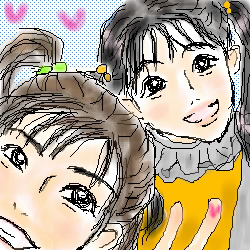

|
October.2002
タツミさんのところで描かせて頂きました。
カメラがちーちゃんに向いたところですかさず入る七世様(笑)。
木生の最初のゴタゴタな感じで描いてみました。
一応、前の指2本は七世の手です。なんか細すぎて分からない…。
そういえば、スタジオ衣装の戦士を描くのはもう何ヶ月ぶりって感じです。
どうしてあんまり描かないのかな〜。めんどくさい？(笑)
私はよく参考にビデオを静止して見ながら描くんですが、この二人、
見れば見るほど顔が綺麗なのでだんだん腹立ってきました(笑)。ずるい！